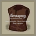
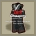

ใช่เลย
ไอ้ตอนแรกผมก็นึกว่าส่งของเก่าที่มีอยู่แล้วได้ด้วย
ลองเป็นแบบนี้ก็เลยไม่ค่อยจะน่าสนใจเท่าไหร่เลย

ไอ้ตอนแรกผมก็นึกว่าส่งของเก่าที่มีอยู่แล้วได้ด้วย
ลองเป็นแบบนี้ก็เลยไม่ค่อยจะน่าสนใจเท่าไหร่เลย
http://eco.froztic.in.th/archive/ecofanclub/
http://eco.froztic.in.th/archive/ecofanclub/viewtopic.php?f=27&t=54621
-คนหน้าตาดี- เขียน:Gift มันก็แปลได้ตรงตัวว่าของขวัญนะ
ใครเค้าเอาของที่มีอยู่แล้วให้เป็นของขวัญกันมั่งนะ..

WiNniez เขียน:-คนหน้าตาดี- เขียน:Gift มันก็แปลได้ตรงตัวว่าของขวัญนะ
ใครเค้าเอาของที่มีอยู่แล้วให้เป็นของขวัญกันมั่งนะ..
ของขวัญไม่จำเป็น ต้องเป็นของใหม่นิ

-คนหน้าตาดี- เขียน:Gift มันก็แปลได้ตรงตัวว่าของขวัญนะ
ใครเค้าเอาของที่มีอยู่แล้วให้เป็นของขวัญกันมั่งนะ..
 Matador ArmorEX(Blue) 80,000G
Matador ArmorEX(Orange) วิธีทำ
Matador ArmorEX(Blue) 80,000G
Matador ArmorEX(Orange) วิธีทำ

Blaze Tatoo(M) วิธีทำ Matador Armor(Blue) 85,000G
Matador Armor(Orange) วิธีทำ

Maimai Clothes(M)A 77,000G